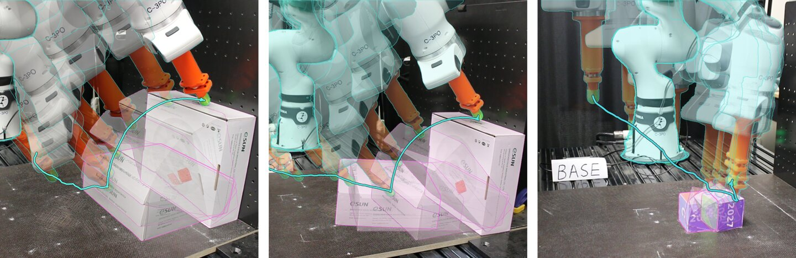
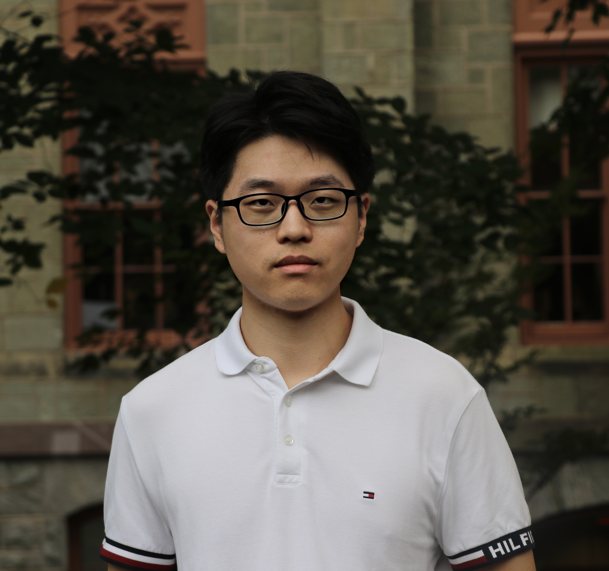
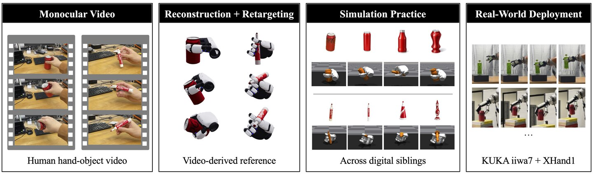

I am a master's student in Robotics at the GRASP Lab, University of Pennsylvania, advised by Prof. Kostas Daniilidis and Prof. Nadia Figueroa. I was previously a visiting student at the Intelligent Autonomous Systems (IAS) Lab, TU Darmstadt, advised by Prof. Jan Peters. I received my bachelor's degree from Tongji University.
My research interests lie in robot learning and robot manipulation. Specifically, I work on dexterous manipulation, visuo-force and visuo-tactile policies, and compliant manipulation for contact-rich tasks.

